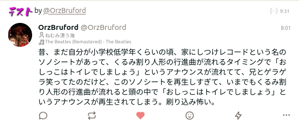
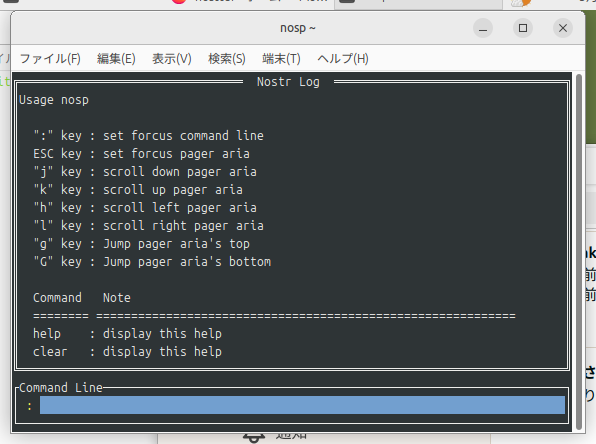
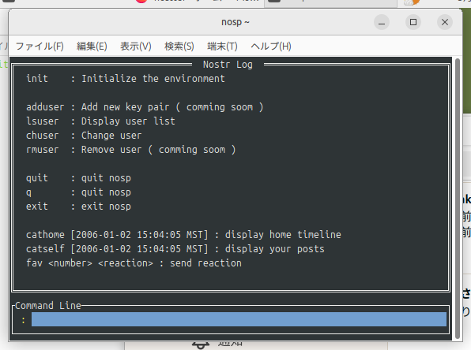
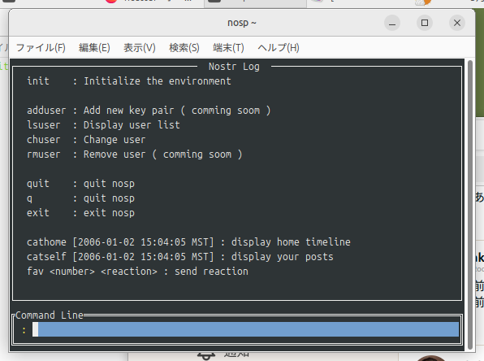
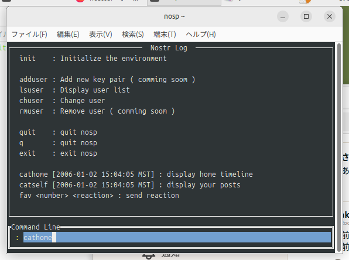
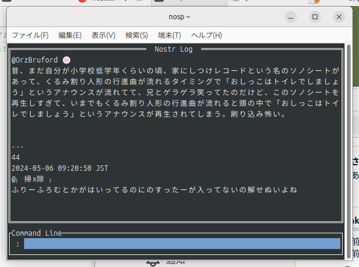
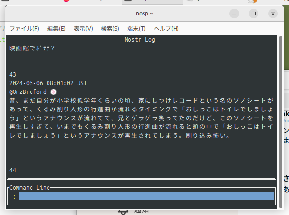
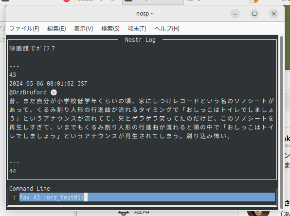

長いタイトルだけど今日の日記の全てを表している。興味ない人はブラウザを Close。
以前の日記で Nostr というプロトコル上に構築されている SNS を始めたことを書いた。SNS と呼ぶべきかどうか、自分的にも結論が出ない議論があるが、ここでは横に置いて無視する。
Nostr のプロトコルにはカスタム絵文字を使ったリアクションというものが定義されている。リアクションというのは旧 twitter のいいねを、もう少しラグジュアリというかリッチにしたものと考えればよい。
旧 twitter だといいねは ♥ がつくだけなのだけど、上の図を見ればわかるように ♥ ではなく、"テスト" みたいな感じに ♥ 以外の絵文字、またはカスタム絵文字でリアクションすることができる。
絵文字やカスタム絵文字によるリアクションは多くのクライアントがサポートしているけれど、絵文字やカスタム絵文字を柔軟に使うことができるものが少なく、多くのクライアントは特定の絵文字、またはカスタム絵文字を固定的にリアクションに割り当てるものが少なくない。
もっと自由に絵文字やカスタム絵文字をリアクションに、しかもリアクションをするタイミングでそれを選べれば、Misskey.io のような楽しさを演出できるんじゃないかと考えた。
自分は Nostr を SNS っぽく使うときに、Web クライアントの他に、自作ツールの nostk を使っていて、テキストをパブリッシュするとき、つまり投稿するときに、かなり nostk に依存している。
また nostk が出力するログを見るためのビューワとして不完全ながら nosp というものも作っている。
この２つのソフトを使って標題の “Nostr 用ツール nostk と nosp を組み合わせてカスタム絵文字リアクションをできるようにした” のが今回の話になる。
以降、nostk と nosp を組み合わせて、どうやって絵文字リアクション、カスタム絵文字リアクションを行うのか、その順番を列記する。
以下の準備をあらかじめ行っておく必要がある。
仮想ターミナルを起動する。筆者は MATE Terminal を 256 color モードで使用している。
コマンドプロンプト上で
$ nosp ↵
と入力すると下図のように nosp が起動し初期画面になる。
Shift+G を押すと下図のように画面が最後尾にスクロールする。
画面に見える "fav" というのが、絵文字、カスタム絵文字を使ったリアクションをするための、サブコマンドだ。
画面に描かれているように "fav <number> <reaction>" をコマンドラインに入力してエンターキーを押すと、絵文字またはカスタム絵文字を使ったリアクションをパブリッシュすることができる。
このサブコマンドの <number> は event id 等 Nostr での会話で普通にでてくる Id 等ではないので注意されたい。<number> については後述する。
先に進む。
“:” をまず最初に押す。すると下図のようにコマンドラインにカーソルが現れ、サブコマンドを入力することができるようになる。

リアクションをする前にまずは nosp にリアクション対象の投稿を取り込む必要がある。
投稿が見えないと、誰のどの投稿にリアクションしたらいいのかわからないはずだし、初期状態で nosp 内の投稿データ一覧は空っぽなので、2024 年 5 月 6 日の時点でチェックを入れていないこともあり、いきなり fav サブコマンドを実行したら nosp がクラッシュするかもしれない。
なので、まず最初にやることは “cathome” サブコマンドで、フォローしているユーザの投稿を取得し画面に表示することだ。
実は “cathome” サブコマンドのテストが不十分で、2024 年 5 月 6 日の時点でたまに nosp がクラッシュすることがある。現時点ではサブコマンドに引数を与えないのをお勧めする。
しばらくすると cathome サブコマンドの結果、つまり nosp が呼び出した “nostk catHome” コマンドの結果が画面に表示される。
この状態で k キーを何度か押すと画面が上方向にスクロールする。
上の私の記事の最初の行に 43 という数字が見える。これは nosp が取得した何番目の記事なのかということを示している。fav サブコマンドの <number> にこの番号を指定する。
そしてサブコマンドへの 2 つ目の引数として、絵文字、カスタム絵文字のショートコード、“+”、“-” 等を指定する。詳細は NIP-25 を参照して欲しい。
カスタム絵文字は nostk 側で設定済みでなければならない。設定されていなければ単なる文字列としてそのままリレーに送られてしまう。おそらくはリアクション自体が失敗する。
cathome サブコマンドでホームタイムライン (この言い方で正しいのかよくわからない) を取得しているので、上の投稿に “テスト” というカスタム絵文字を指定してリアクションしてみる。
:orz_test01: というのが “テスト” というカスタム絵文字のショートコードだ。
エンターキーを押してしばらく待つと (今の実装では) コマンドラインがクリアされる。クリアされた状態になると fav サブコマンドは終了している。
現状で nosp も nostk もリアクションを表示できないので、Web アプリケーションで見てみる。すると
となって、カスタム絵文字でリアクションできていることが確認できる。
以上が nosp と nostk で カスタム絵文字リアクションを使う大まかな流れになる。